The Edit Action Dialog description is divided into three sections:
The dialog displays a color scale, and the name of the Weather Element is shown at the top of the dialog. There are four different types of dialogs: Scalar, Vector, Weather, and Discrete.
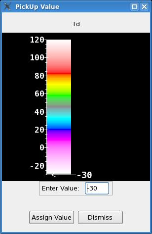
The scaling can be changed by MB2 click over the scale. The MB3 Pop-Up menu that allows you to modify the display of the color scale is currently not available from the Pickup Value dialog. Select one of the follow Pop-Up menu items to modify the scale display accordingly.
The graphical entry contains a circle representing the current magnitude, a wind barb and arrow representing both magnitude and direction, and a meter readout also representing both magnitude and direction.
The user can choose to set the direction through the graphical entry in either the "to" or the "from" direction by starting the operation in the appropriate hemisphere. If you start the entry operation within 90 degrees of either side of the arrow, then you are specifying the "to" direction. If you start the entry operation within 90 degrees of either side of the wind barb, then you are specifying the "from" direction.
Clicking or dragging in the graphic entry will set the magnitude and direction, if the vector edit mode is set to Both. If the vector edit mode is set to Magnitude Only, then only the magnitude may be set. If the vector edit mode is set to Direction Only, then only the direction may be set. The direction is determined by the angle from the center of the circle. The magnitude is determined by the distance your cursor is from the center of the circle.
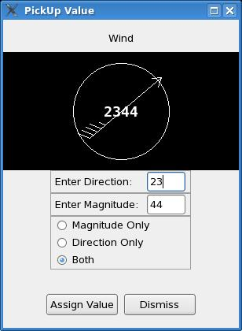
| Current Value | Shows the current weather value for the dialog. The weather key is a composite of all of the weather type entry frames. Note that certain coverages, probabilities, and intensities may be combined into a more significant key. For example, if you have Sct RW- in one entry frame and Sct RW + in another, the resulting value will be the more significant event, which will be Sct RW +. Coverages and probabilities are also combined in the same manner. |
| Reset to No Weather | Resets the entry fields back to No Weather. |
| Add New Weather Type Entry Frame | Adds a new weather type entry frame to allow the user to specify an additional weather type. |
| Toggle Replace/Combine Mode | If the Assign Value button is pressed, the current weather key is assigned to the active edit area. In replace mode, any existing data will be replaced in the active edit area. In combine mode, the new weather will be combined with any existing weather. |
| Add to session | Adds the currently displayed value to the list of user-defined session values. This is useful to set up a sequence of pick up values which can later be accessed from the color bar pull-down menu. |
| Edit Data | Runs the "Assign Value" tool on the active edit area. |
| Weather Type | The weather type field consists of No Weather, precipitation, and obstructions to vision. The weather type should always be chosen first. |
| Coverage/Probability | The coverage and probabilities option menu contents depends upon the weather type chosen. The default may be specified in the GFE configuration file for each weather type. |
| Intensity | The intensity option menu contents depends upon the weather type chosen. Some weather types don't have a valid intensity and thus the <NoInten> must be chosen. The default may be specified in the GFE configuration file for each weather type. |
| Visibility | The visibility option menu is fixed for all weather types. The selection of <NoVis> indicates that no visibility has been defined. |
| Optional Attributes | The list of optional attributes is weather type dependent. |
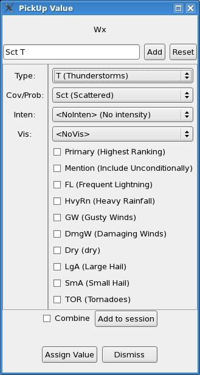
The user may also control the Weather/Discrete
Combine Mode by using the Combine pushbutton.
"Description" information about each entry is available through the GFE -> Viewing
Preferences -> Wx/Discrete: Show Description menu option.
| Current Value | Shows the current discrete value for the dialog. The discrete key is a composite of all of the discrete value frames. For non-overlapping, there is only 1 frame available. |
| Reset | Resets the entry fields back the default value (1st entry defined in the discrete key definition in serverConfig) |
| Add New Entry Frame | Adds a new weather type entry frame to allow the user to
specify an
additional discrete type. This may not appear for all weather
elements since some weather elements are not defined to allow for
overlapping types. |
| Toggle Replace/Combine Mode | If the Assign Value button is pressed, the current discrete key is assigned to the active edit area. In replace mode, any existing data will be replaced in the active edit area. In combine mode, the new discrete value will be combined with any existing discrete value. |
| Add to session | Adds the currently displayed value to the list of user-defined session values. This is useful to set up a sequence of pick up values which can later be accessed from the color bar pull-down menu. |
| Edit Data | Runs the "Assign Value" tool on the active edit area. |
| Base Type |
This is the base type of the
discrete value. |
| Aux Data |
The aux data field is
optional. If enabled, only a certain width entry is
allowed. The purpose for the aux data is specific to the discrete
element. |
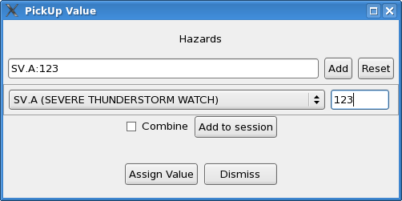
The user may also control the Weather/Discrete
Combine Mode by using the Combine pushbutton.
"Description" information about each entry is available through the GFE
-> Viewing Preferences -> Wx/Discrete: Show Description menu
option.
Type in the delta value and click OK or use the slider to set the value.
At any time you can click Cancel to cancel the operation and close the dialog.
When a query is applied against a particular grid, its weather conditions are searched for. The result is a new edit area that consists of all the areas that match the query's weather conditions.
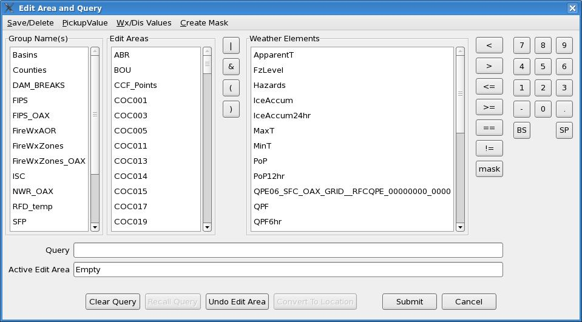
For Discrete elements, the user specifies the key. See the Discrete Pick Up Dialog more more detailed on how to use the dialog.
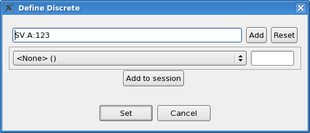
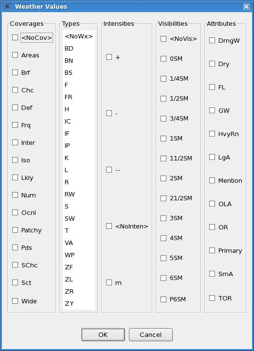
For discrete, the options are simply a list of the possible discrete types:
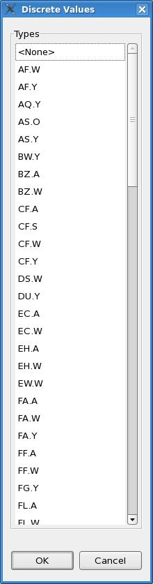
Parenthesis are very important when using the OR ('|') or AND ('&') operators since these operators have a high order of precedence. The following statements are not equal:
T > 32 | Topo > 7000
(T > 32> | (Topo > 7000)
The following are valid queries for SCALAR data:
| T > 32 | Temperature greater than 32 |
| T < 32 | Temperature less than 32 |
| T == 32 | Temperature equal to 32 (exactly) |
| T != 32 | Temperature not equal to 32 (exactly) |
| T >= 32 | Temperature greater than or equal to 32 |
| T <= 32 | Temperature less than or equal to 32 |
More complicated queries may also be performed such as the following
on SCALAR data (note that parenthesis must be provided):
| T - Td > 10 | Dew Point Depression is greater than 10 |
| T - 10 > Td | Dew Point Depression is greater than 10 |
| (QPF > 0.10) & (PoP < 70) | QPF greater than 0.10" and PoP less than 70% |
| (T > 32) & (Topo > 5000) & (Topo < 7000) & Colorado | Temperatures less than 32, with topography between 5000ft and 7000ft, in the state of Colorado. |
Vector queries can be done on the magnitude and the direction
component,
note that Wind[0] refers to the magnitude and Wind[1] refers to the
direction,
as in smart initialization and smart tools:
| Wind[0] > 25 | Wind speed greater than 25 |
| (Wind[0] > 25 & (Wind[0] < 40) | Wind speed between 25 and 40 |
| (Wind[0] > 25 & (Wind[1] > 90 & (Wind[1] < 180) | Wind speed greater than 25, with the direction between 90 and 180. The direction is the "FROM" direction. |
Weather and Discrete queries are performed using the mask
function. The mask button on the dialog simply saves you from
typing
the word mask. The mask function is in this form:
mask(weatherElementName,
stringMatch, regExpressionYesNo). Normally you don't provide a
regular
expression so the mask is in this form: mask(weatherElementName,
stringMatch). Here are some examples of using the mask function
for
Weather and Discrete:
| mask(Wx, ":R:") | Wx with Rain (R), with any coverage, visibility, attributes. |
| mask(Wx, ":R:") | mask(Wx, ":RW:") | Wx with Rain (R) or Rain Showers (RW) |
| mask(Wx, "Sct:RW:") | Wx with Scattered Rain Showers |
| mask(Highlights, "WntrStmWRN") | Highlights with Winter Storm Warning |
| mask(Wx, "Sct:RW:+:<NoVis>") | Wx with Scattered Heavy Rain Showers, No Visibility |
| mask(wx, "^Sct:RW:+:<NoVis>:\Z", 1) | Wx with ONLY Scattered Heavy Rain Showers, No Visibility. Note that this is regular expression syntax with the '^' matching the beginning of the phrase and the '\Z' matching the end of the phrase. |
The mask function uses substring searches of the keys to determine what grid points match the query. The PickUp Value and Wx/Dis Values menus provide a quick way to enter the pick up value or an exact match for weather and discrete weather elements. Note that since substring comparisions are performed, providing a query of mask(Wx, "Sct:RW:+:") will match any grid point that has Sct:RW:+: in it, so it will also match grid points that have a weather key of: "Iso:T:<NoInten>:<NoVis>:^Sct:RW:+:<NoVis>". The only way to find grid points that ONLY have the Sct:RW:+: in it without others is to use the regular expression option as shown above in the table.
The create mask menu option provides an easy way to select a set of Wx or Discrete characteristics to search.
Combining queries are performed through the "|" OR and "&" AND operators. Since the syntax in the query is numpy, there are many other possibilities for the syntax. Here is an example of using the python absolute() function to calculate the absolute value of an expression. In this case, we are selecting all T grid points that differ from the AVN model greater than 5 degrees:
absolute(T - T_SFC__AVN) > 5
The name in the query, e.g., T, can be one of several forms:
| T | Refers to T_SFC_Fcst_00000000_0000 (Fcst database) |
| T_3K | Refers to T @ 3K, for the Fcst database |
| T_SFC__NAM | Refers to T @ SFC, from the latest run of the NAM model |
| T_SFC__NAM_20030310_1200 | Refers to T @ SFC, from the March 10th, 12z, run of the NAM model |
| T_SFC_BOU_GRID__NAM | Same as T_SFC__NAM (The BOU_GRID is optional) |
| T_SFC_BOU_GRID__NAM_20030310_1200 | Same as T_SFC__NAM_20030310_1200 (The BOU_GRID is optional.) |
To save the Active Edit Area, type a name in the Identifier box. Select the Edit Area Group(s) that are to include the Edit Area. If you want the area included in a new Group, simply type in the New Group name. No Group(s) need be selected -- including the Edit Area in Groups is optional and can be changed later using this or the Save Edit Area Groups Dialog. Click "Save" to save the Edit Area. You may Cancel the dialog at any time.
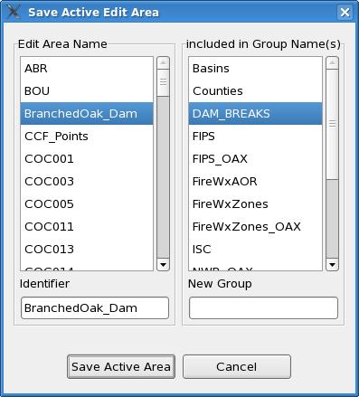
To delete a saved Edit Area, click on its name which will appear in the Identifier box and click "Delete." You may Cancel the dialog at any time.
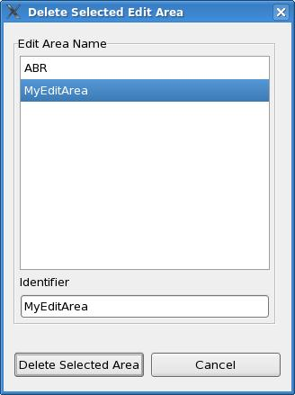
To save an Edit Area Group, type a name in the Identifier box or select a Group from the left-hand list box. Select/deselect the Edit Area(s) that are to be included the Edit Area Group. Click "Save" to save the Edit Area Group.
You may Cancel the dialog at any time.
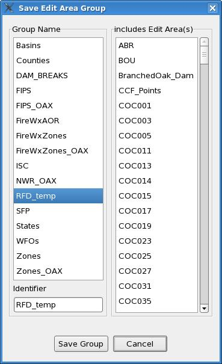To delete a saved Edit Area Group, click on its name which will appear in the Identifier box and click "Delete Group." The Edit Areas included in the Group will NOT be deleted unless you specifically choose to do so by checking the "Delete All Areas within Group" button. These areas will also then be deleted from any other groups in which they belong. If the "With Verification" button is on, a dialog will appear for each Edit Area deleted so you can verify that you want it deleted.
You may Cancel the dialog at any time.
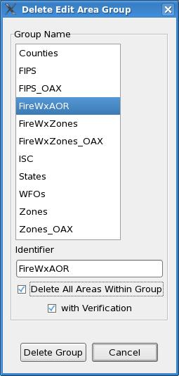